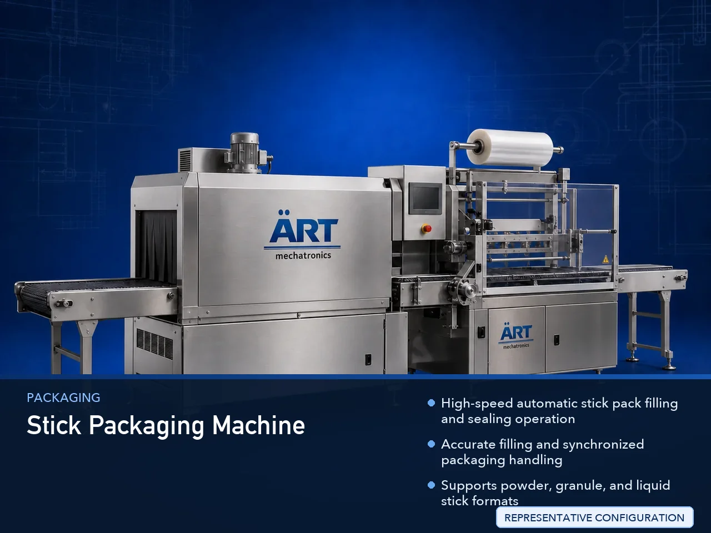

Stick Packaging Machine (Automatic Stick Pack Filling & Sealing System)
A Stick Packaging Machine, also known as a Stick Pack Packaging Machine, Stick Pack Filling Machine, Multi Lane Stick Pack Machine, or Stick Sachet Filling & Sealing Machine, is an advanced industrial packaging solution designed for automatic stick pouch forming, film feeding, filling, dosing,…

About the Stick Packaging Machine
Stick pack packaging systems are widely used for: ✔ Powder stick packaging ✔ Granule stick packaging ✔ Liquid stick packaging ✔ Single-serve packaging ✔ Nutraceutical stick packaging ✔ FMCG stick packaging ✔ Retail sachet packaging ✔ Continuous industrial packaging
The machine improves: ✔ Packaging speed ✔ Product hygiene ✔ Filling accuracy ✔ Portion consistency ✔ Shelf life protection ✔ Production efficiency ✔ Premium retail packaging appearance
Industrial stick packaging machines use: ✔ Roll film feeding systems ✔ Servo synchronized filling technology ✔ PLC and HMI automation controls ✔ Precision sealing systems ✔ Multi-lane stick pack forming mechanisms
to automatically form, fill, and seal stick packs with superior packaging quality and high production efficiency.
Stick packaging machines are widely used in industries such as:
Food processing industries Coffee industries Tea industries Nutraceutical industries Pharmaceutical industries FMCG industries Pan masala & mouth freshener industries Chemical industries
where compact single-serve packaging and high-speed production efficiency are essential.
The machine is highly suitable for: ✔ Coffee stick packaging ✔ Sugar stick packaging ✔ Protein powder packaging ✔ Pan masala packaging ✔ Energy drink premix packaging ✔ Spice packaging ✔ Nutraceutical packaging ✔ Liquid stick packaging
ART Mechatronics offers high-performance stick packaging machines, engineered for continuous industrial operation, accurate filling, premium sealing quality, and reliable long-term packaging automation.
Working Principle of Stick Packaging Machine
- 1. Film Roll Feeding Packaging film roll is loaded into film feeding section.
- 2. Stick Pack Forming Process Machine automatically forms stick packs using synchronized film pulling and forming systems.
Servo synchronization ensures smooth film movement and accurate stick pack formation.
- 3. Product Filling Operation Machine handles: ✔ Powders ✔ Granules ✔ Liquids ✔ Coffee premix ✔ Sugar ✔ Nutraceutical products ✔ Pan masala products
accurately and continuously.
- 4. Stick Pack Sealing & Cutting Process Machine performs: Vertical sealing Horizontal sealing Heat sealing Airtight sealing Automatic stick cutting
for hygienic and premium packaging quality.
- 5. Coding & Inspection Integration Optional systems include: Batch coding Date printing QR code printing Metal detection Check weighing
- 6. Finished Stick Pack Discharge Finished stick packs discharged automatically for: Cartoning Retail display Secondary packaging Dispatch operations
Types of Stick Packaging Machines
- 1. Multi Lane Stick Packaging Machine Designed for: ✔ High-speed industrial stick pack packaging applications
- 2. Powder Stick Packaging Machine Suitable for: ✔ Coffee, tea, spice, and nutraceutical packaging systems
- 3. Liquid Stick Packaging Machine Uses: ✔ Syrup, gel, and liquid product packaging systems
- 4. Single Serve Stick Pack Machine Designed for: ✔ Compact retail packaging applications
- 5. Servo Driven Stick Packaging Machine Suitable for: ✔ Precision high-speed stick packaging operations
- 6. Fully Automatic Stick Packaging System Designed for: ✔ Complete industrial stick packaging automation lines
Industries Using Stick Packaging Machines
☕ Coffee & Beverage Industry Coffee premix, instant beverage, and energy drink stick packaging systems. 🌿 Nutraceutical Industry Protein powder, health supplement, vitamin, and nutraceutical stick packaging systems. 🌶️ Spice Industry Seasoning, spice powder, and ingredient stick packaging systems. 🌿 Pan Masala & Mouth Freshener Industry Pan masala, supari, and mouth freshener stick packaging systems. 🛒 FMCG Industry Consumer stick pack packaging systems. 💊 Pharmaceutical Industry Healthcare and pharmaceutical stick packaging systems. ⚗️ Chemical Industry Powder and liquid chemical stick packaging systems.
Features & Advantages
✔ High-speed automatic stick pack filling and sealing operation ✔ Accurate filling and synchronized packaging handling ✔ Supports powder, granule, and liquid stick formats ✔ PLC and servo automation control systems ✔ Improves product shelf life and hygiene ✔ Reduces packaging wastage and labor dependency ✔ Hygienic food-grade construction available ✔ Reliable long-term industrial performance ✔ Premium single-serve retail packaging appearance
Technical Highlights
Machine Type: Multi lane stick packaging machine Stick sachet packaging machine Automatic stick filling machine Packaging Material: Laminated films Printed packaging films Flexible packaging films Filling Integration: Auger fillers Liquid fillers Servo dosing systems Volumetric fillers Features: PLC control system Servo synchronization Touchscreen HMI Batch coding integration Automatic cutting system Sealing Type: Vertical seal Horizontal seal Heat seal Airtight seal Automation: Semi-automatic Fully automatic industrial systems
Turnkey Stick Packaging Solutions
ART Mechatronics offers: Complete stick packaging systems Stick pack filling and sealing solutions Packaging automation integration systems Conveyor synchronization systems Installation & commissioning After-sales service & AMC
Why Choose Art Mechatronics
Expertise in industrial packaging and automation systems Customized stick packaging solutions for multiple industries High-performance and durable packaging technology Advanced PLC and servo automation systems Proven industrial packaging performance across sectors
Applications
Coffee Processing Plants Food Processing Industries Nutraceutical Industries Spice Processing Plants FMCG Packaging Facilities Pharmaceutical Industries
Get pricing & specs for the Stick Packaging Machine
Share the product, target capacity, current process and plant location. These details help our engineers discuss the right machine or line configuration.
One partner, from design to start-up
ART Mechatronics designs, manufactures, installs and commissions your Stick Packaging Machine solution with regional presence in India, UAE and Thailand.